Best Fit
Who should use design and when it belongs in the services journey.
Services / 01
Services opens as a clear engineering decision hub: what Core offers, who it helps, why it matters, and which route to take first.
The first screen combines positioning, proof, primary action, and fast internal navigation, so people can act immediately or compare the rest of the services route with context.
Red-rule technical hero
Select the closest route and Core keeps the next step, proof, and follow-up expectation aligned with reliability and standards.
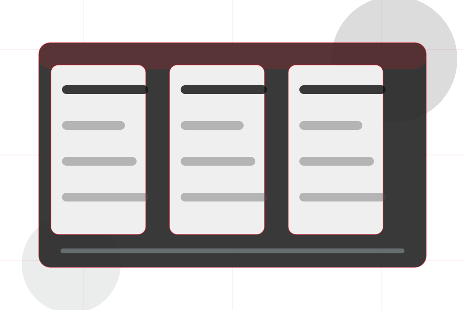
Services / 02
Design explains the practical scope, best-fit situations, and expected outcome so engineering visitors can compare options without decoding jargon.
The section keeps the offer concrete: what is included, who it is best for, what decision it supports, and which linked route gives the deeper detail.
Explore Services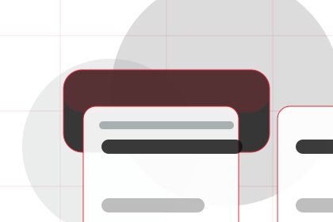

Who should use design and when it belongs in the services journey.
Services / 03
Testing explains the practical scope, best-fit situations, and expected outcome so engineering visitors can compare options without decoding jargon.
The section keeps the offer concrete: what is included, who it is best for, what decision it supports, and which linked route gives the deeper detail.
Explore Services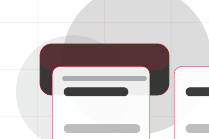
Who should use testing and when it belongs in the services journey.
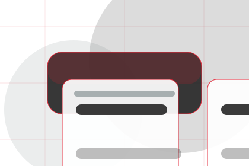
The practical benefit visitors should expect after choosing this route.
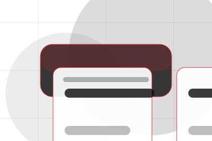
Where to compare details, pricing, support, or contact options before committing.
Services / 04
Maintenance explains the practical scope, best-fit situations, and expected outcome so engineering visitors can compare options without decoding jargon.
The section keeps the offer concrete: what is included, who it is best for, what decision it supports, and which linked route gives the deeper detail.
Explore ServicesWho should use maintenance and when it belongs in the services journey.
The practical benefit visitors should expect after choosing this route.
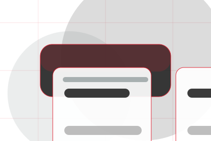
Where to compare details, pricing, support, or contact options before committing.
Services / 05
Diagnostics explains the practical scope, best-fit situations, and expected outcome so engineering visitors can compare options without decoding jargon.
The section keeps the offer concrete: what is included, who it is best for, what decision it supports, and which linked route gives the deeper detail.
Explore ServicesWho should use diagnostics and when it belongs in the services journey.
The practical benefit visitors should expect after choosing this route.
Where to compare details, pricing, support, or contact options before committing.
Services / 06
Compliance explains the practical scope, best-fit situations, and expected outcome so engineering visitors can compare options without decoding jargon.
The section keeps the offer concrete: what is included, who it is best for, what decision it supports, and which linked route gives the deeper detail.
Explore ServicesWho should use compliance and when it belongs in the services journey.
The practical benefit visitors should expect after choosing this route.
Where to compare details, pricing, support, or contact options before committing.
Services / 07
Support explains the practical scope, best-fit situations, and expected outcome so engineering visitors can compare options without decoding jargon.
The section keeps the offer concrete: what is included, who it is best for, what decision it supports, and which linked route gives the deeper detail.
Open Contact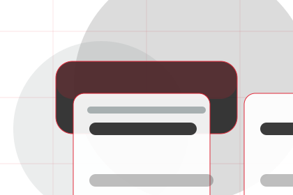
Who should use support and when it belongs in the services journey.
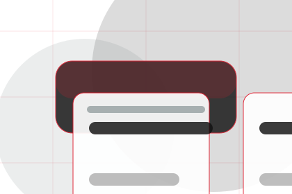
The practical benefit visitors should expect after choosing this route.
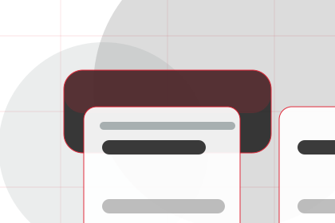
Where to compare details, pricing, support, or contact options before committing.
Services / 08
Deliverables explains the practical scope, best-fit situations, and expected outcome so engineering visitors can compare options without decoding jargon.
The section keeps the offer concrete: what is included, who it is best for, what decision it supports, and which linked route gives the deeper detail.
Explore ServicesWho should use deliverables and when it belongs in the services journey.
The practical benefit visitors should expect after choosing this route.
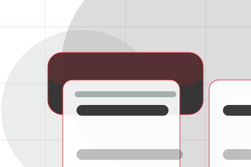
Where to compare details, pricing, support, or contact options before committing.
Services / 09
Benefits defines the better state Core is built to create, with enough detail to make the promise believable.
An engineering authority site with editorial project blocks, red rules, technical proof, and expert enquiry. The section grounds that direction in concrete benefits, visible tradeoffs, and a next route visitors can use when the promise feels relevant.
Explore ServicesBenefits defines what becomes clearer, easier, or safer when Core is the chosen route.
The benefit is tied to reliability and standards, not a vague quality claim.
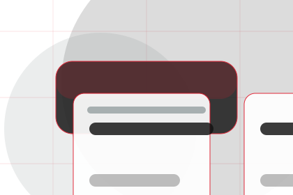
Visitors get a linked path to compare the promise against services, standards, or examples.
Services / 10
Core closes the services route with a clear action, a quick reminder of the value, and a low-friction way to ask an engineer.
Visitors who are ready can use the primary action. Visitors who are still comparing can scan the section links, proof, and support routes before they ask an engineer.
Ask EngineerThe final block keeps the choice simple: act now, compare one more proof route, or send enough detail for a focused response.
Ask Engineerreliability and standards
An engineering authority site with editorial project blocks, red rules, technical proof, and expert enquiry. Services ends with a direct path to ask an engineer, plus enough context for visitors who still need to compare.
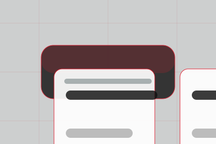
Ask EngineerInformation is provided for planning and should be reviewed for the final client, location, and operating rules.